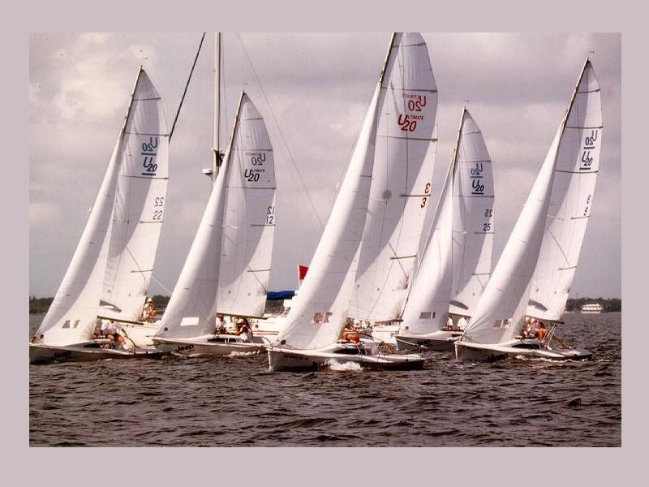

Expertise, knowledge, and experience. If you are tired of inexperienced incompetent staff at your current freight forwarder, then its time to change to Taurus Logistics, and deal direct with experienced freight forwarding professionals. All our key operations staff have been in the industry for a minimum of 10 years. Most even longer....
We know the best way to ship your cargo, to give you the lowest TOTAL cost. If you value your shipment, don;t take the risk, call Taurus Logistics first. We speak your language, not jargon.
What makes our service better?
Customer service is our first priority. We respect and understand that your shipment is a priority. You are our customer, not a package number in an off-shore Call Centre computer. At Taurus Logistics we don;t have a voice activated computerised telephone answering system. We have real people to talk to.
We do of course offer full on-line web tracking, and run very efficient internal systems, but when you need an experienced professional, then we are only a phone call away. Professionals, not data clerks.
Confused with other companies quotes?
Do you have a incomprehensible shipping quote full of jargon? You just want to know the price, right? Our shipping quotes are totalled and easy to follow. We clearly state exactly what is included, and what is not. e.g taxes duties etc. If you are unsure please feel free to call and discuss, so you are self-assured exactly what our service includes.
BEWARE of other quotes which are either to good to be true, or are many pages long full of clauses. Also always check and question the exchange rate, and , to ensure this is not negatively geared. Often with other companies this is only noted in the terms conditions.<
Taurus Logistics Ltd is one of the oldest privately owned forwarding companies in Christchurch. Originally founded in 1984 to provide Customs brokerage and Customs consulting services, today over 20 years on, the underlying principles of customer service, and long term win/win partnership is still at the forefront of the company.
Our international network of overseas partners, have been hand selected over many years to provide the same high standard of service and competitiveness, as Taurus Logistics.
Which means you can be confident that whatever the task, it will be handled with total reliability.
Business development requires a rock solid supply chain to grow and exceed your customers expectations. Taurus Logistics is particularly good at helping small firms become big companies. By developing and nurturing long term business partnerships, and helping their customers exploit trading opportunities wherever in the world these may arise.
Commitment to personal service is a given at Taurus Logistics. We have a stable team whom have all been with the business on average over five years. You can be assured that our right hand does know what the left hand is doing.